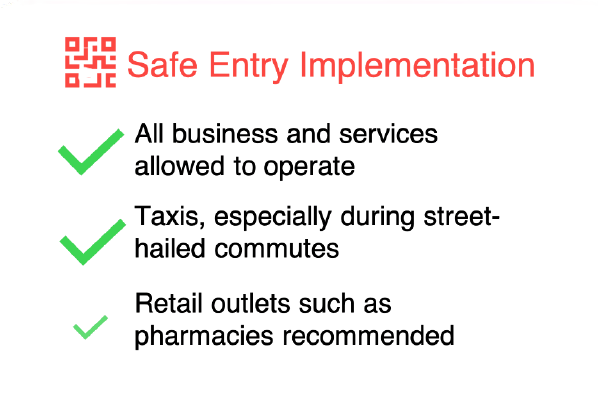

Phase 1: Safe Reopening
Phase 1: Safe Reopening
MFA and MTI announced measures to open "Fast Lanes" for travellers between Singapore and Chongqing, Guangdong, Jiangsu, Shanghai, Tianjin and Zhejiang.
Travellers will be required to pay for their own treatment if they test positive for COVID-19.
MoreSingapore launches a drive-through site located at One Farrer Hotel, which being used to test "priority groups" for the coronavirus, with three other hospital sites also ready to operationalise it.
The drive-through facility is being used to ensure the continuity of critical functions and services.
MoreUnder the new "fast lane" agreement between the two countries, Singapore residents returning from China have to server 14-days Stay-Home notice.
If they keep to this and other terms of the agreement, they will not need to pay coronavirus-related medical bills at public hospitals.
MoreSingapore Airlines and SilkAir passengers flying from selected cities in Australia and New Zealand are now allowed to transit through Changi Airport.
The cities in Australia include Adelaide, Brisbane, Melbourne, Perth (via Scoot) and Sydney, while the New Zealand cities are Auckland and Christchurch.
MoreMOM has investigated nearly 1,000 workplaces so far to curb the spread of COVID-19.
Among those investigated, MOM has issued 52 fines and ordered 7 workplaces to cease operation after they were found to not comply with the safe management measures.
MoreSafeEntry issued an announcement on places where implementation of SafeEntry is mandatory
Singapore scientists testing a COVID-19 vaccine from US firm Arcturus Therapeutics, they plan to start human trials in August.
More than 100 vaccines are being developed globally, to try and control a disease that has infected more than 8 million people and killed over 430,000 worldwide.
More